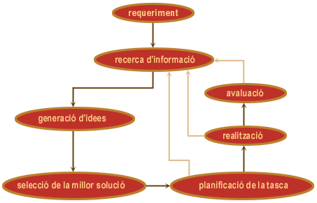

● El procés tecnològic és el mètode base que valida els resultats d'un procés de creació d'un objecte tecnològic.
● Aquest procés es compon d'un conjunt d'etapes seqüencials amb retroalimentacions que seguides sistemàticament faciliten l'obtenció de resultats i la seva adequació als requeriments inicials.
Documentació tècnica
Procés tecnològic

Llicenciat sota la Llicència Creative Commons Reconeixement CompartirIgual 4.0